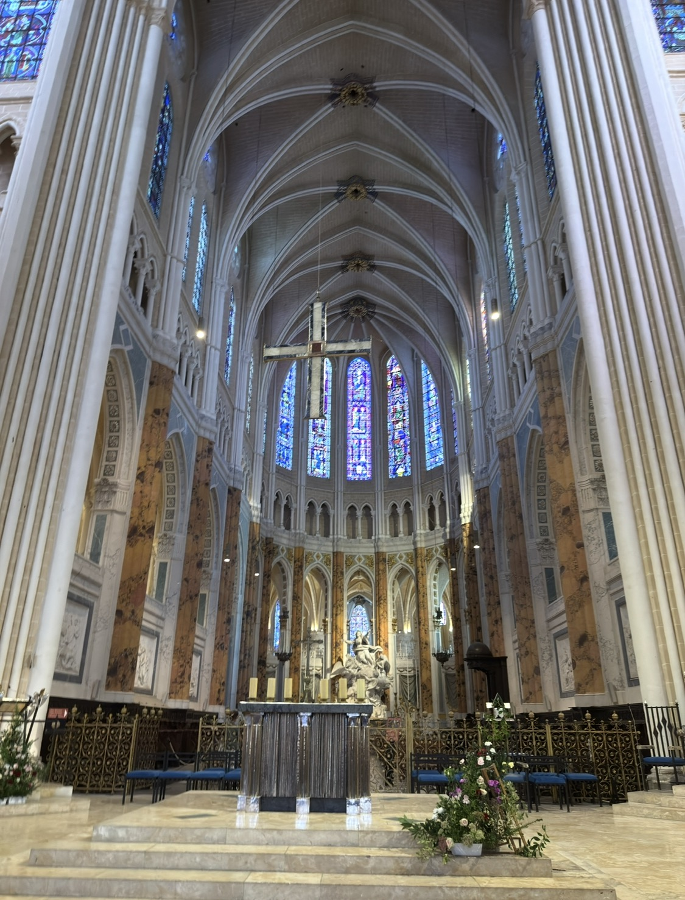
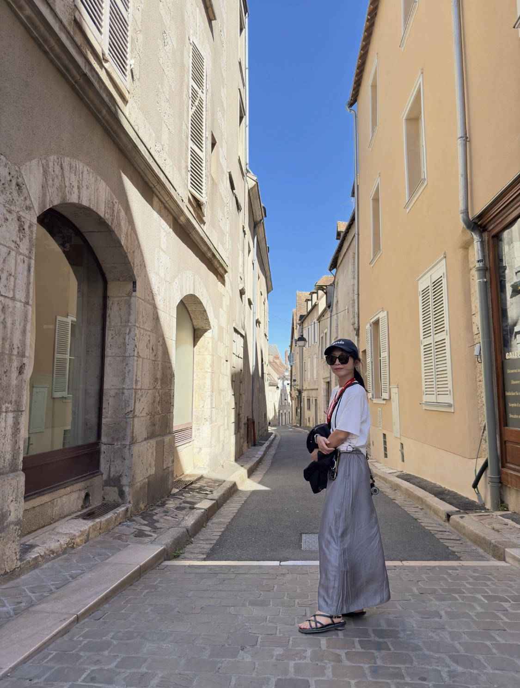
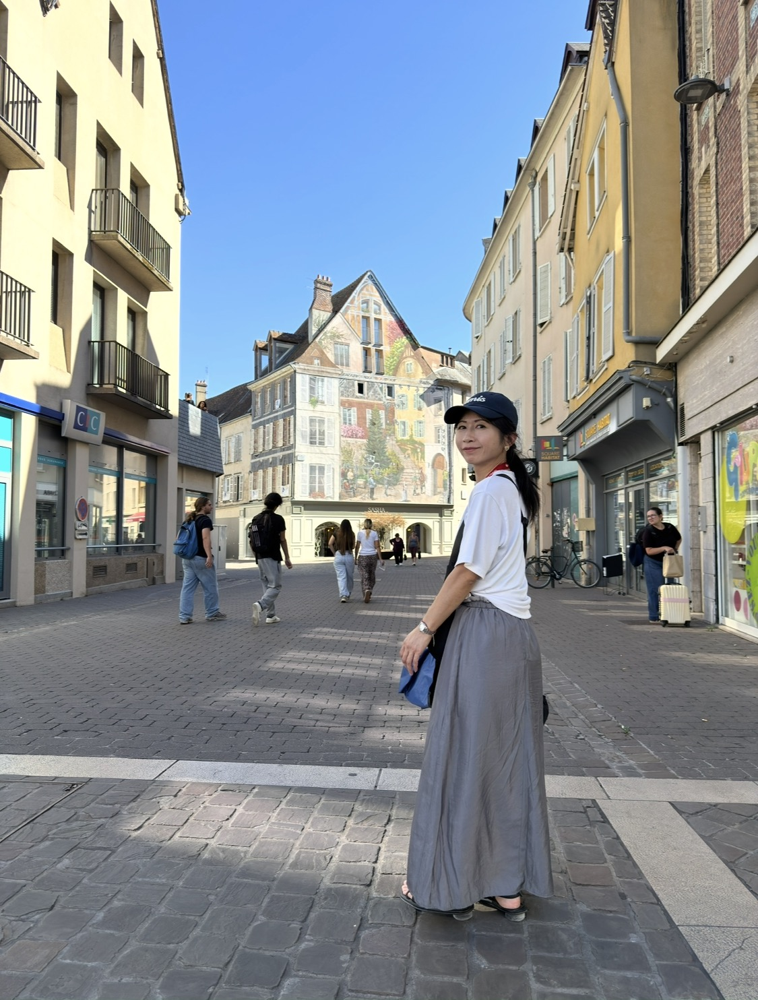
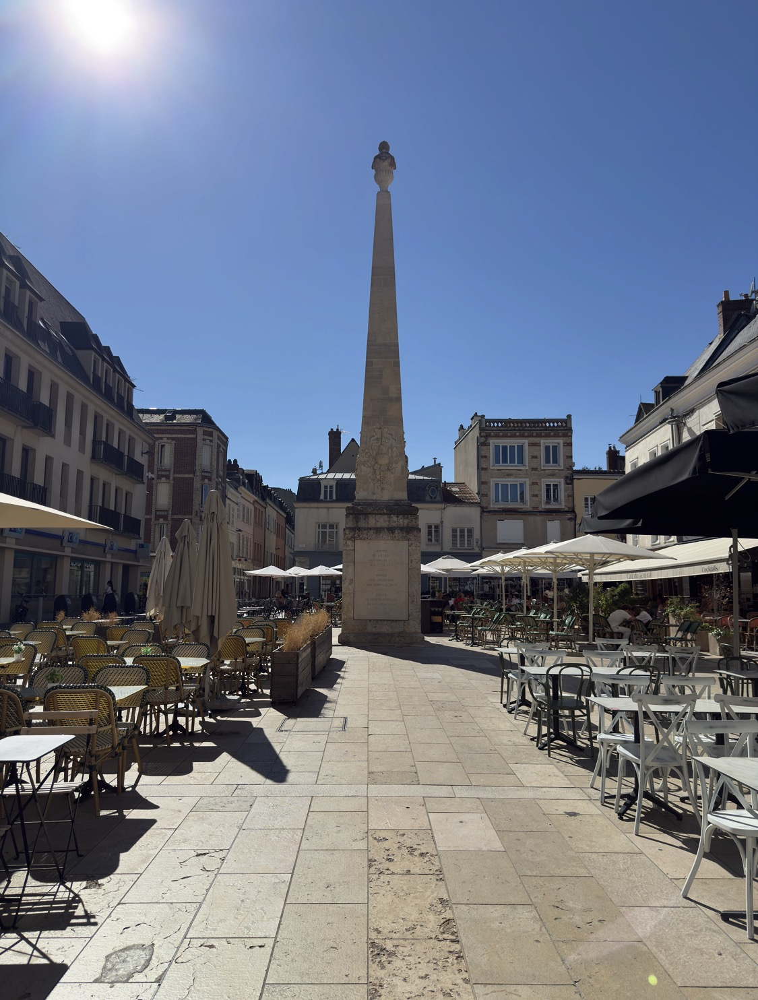
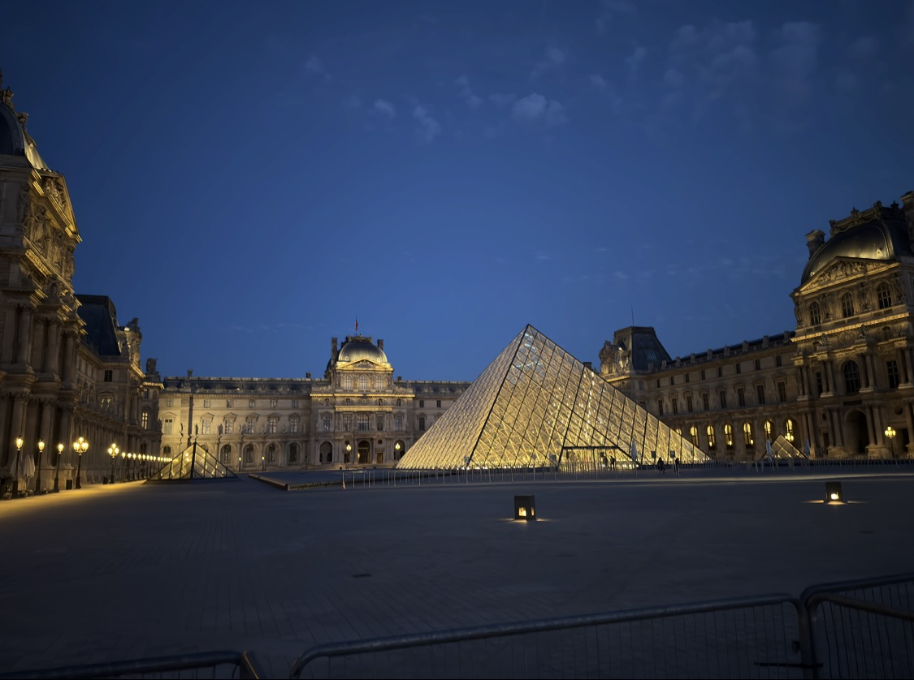
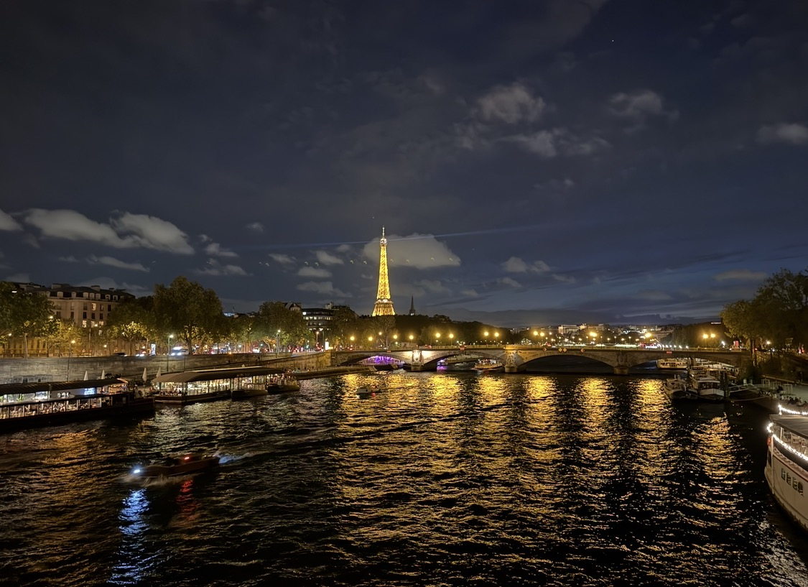
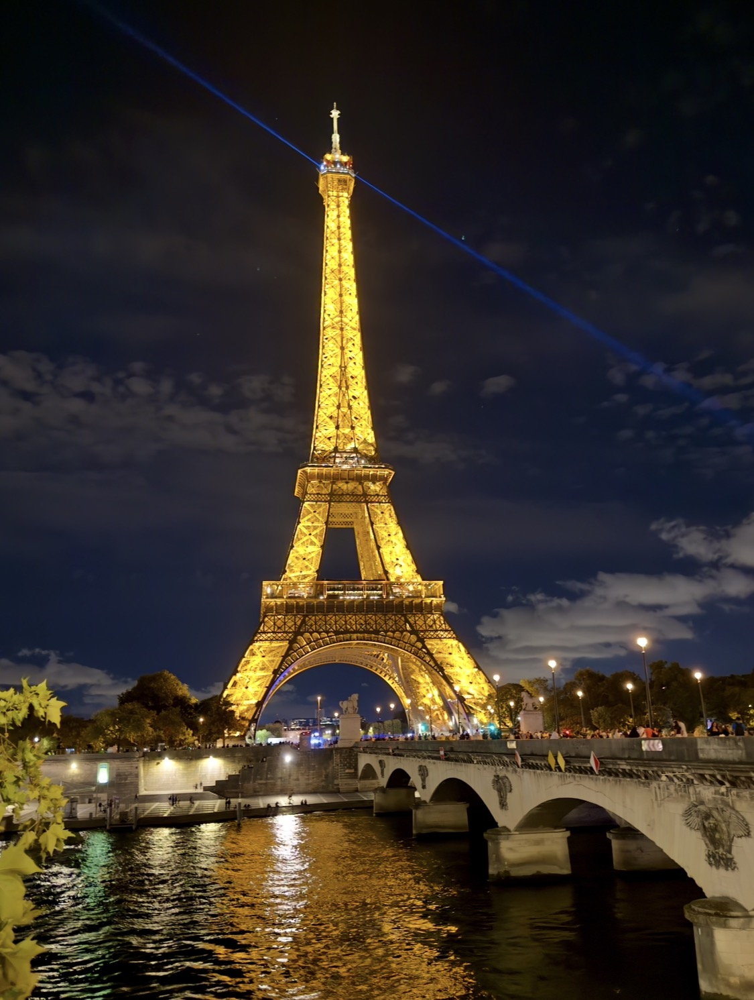
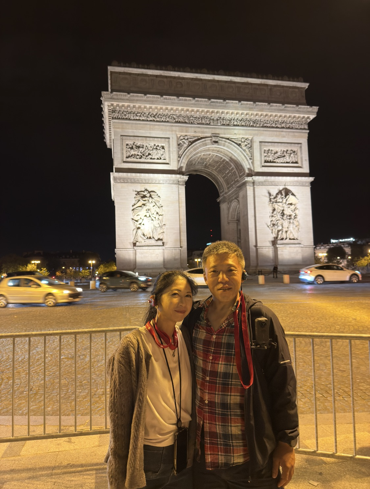

這一站，我甚至連名字都忘了。
從香波堡離開、往巴黎移動的途中，遊覽車停在一座巨大的教堂前。當時的我對它沒有太多預設，也沒有像聖米歇爾山那樣先建立好一整套背景，只記得ChatGPT 曾經提醒過我：這裡有一種很有名的藍，而且正面左右兩座尖塔不是同一個時代蓋的，所以長得不一樣。
回來重新把照片與路線對上，我才確定：
這裡是沙特爾聖母主教座堂，Cathédrale Notre-Dame de Chartres。
也就是那座以中世紀彩繪玻璃聞名世界的沙特爾主教座堂。
有些景點當下記住的是歷史；有些只留下一種顏色、一段街道，或一個「好像很厲害，但我來不及懂」的印象。
ChatGPT 行前說過的那個藍，原來叫「沙特爾藍」
我當時對教堂裡的神學圖像其實談不上理解，但走進去之後，確實很難忽略那些玻璃。
沙特爾主教座堂保存了極為完整的中世紀彩繪玻璃，其中最有名的，就是常被稱作 Chartres blue／Bleu de Chartres 的藍。
官方特別提到，西側三扇最古老的玻璃與「美麗玻璃聖母」（Notre-Dame de la Belle Verrière）都保留了這種帶著透光感的天藍色。當外面的日光穿過它時，石造空間不是單純被照亮，而像被染上了一層冷靜、深沉的藍。
我現在才明白，ChatGPT 當初說「那個藍很厲害」不是在介紹某一塊玻璃，而是在提醒我：進去之後，要注意光本身。

左右兩座塔真的不是故意做成不對稱
照片重新打開後，最明顯的其實就是正面兩座尖塔完全不同。
面向教堂時，右邊那座比較簡潔、線條俐落的「舊尖塔」大約完成於 1160 年；左邊裝飾繁複得多的「新尖塔」則是在木造鐘樓遭火災毀損後，於 1506 至 1513 年間完成。
中間差了三百多年。
所以一邊還帶著較早期的羅曼式到早期哥德過渡氣質，另一邊已經進入華麗得近乎炫技的「火焰哥德式（Flamboyant Gothic）」。
通常我們會直覺以為大教堂應該追求左右完全對稱，可是沙特爾偏偏把時間直接留在立面上。
兩座塔像兩個不同年代的人，站在同一張照片裡。
只是，這次我沒有想把每一段歷史都背回去
前幾天已經一路從海岸、修道院、私掠者、城堡、法王、麥地奇，再走到香波堡的文藝復興。
坦白說，歷史資訊已經快把腦袋塞滿了。
所以在沙特爾，我反而沒有逼自己一定要弄懂每一扇玻璃、每一尊雕像、每一段聖經故事。
看完教堂，我們就走進附近的街道。
而這反而成了我對沙特爾另一個很舒服的記憶。


離開教堂後，城市忽然安靜下來
天氣還是很好。
藍天、乾爽的空氣、淺色石牆，巷子從觀光區一路往下延伸。沒有巴黎的人潮，也沒有大型景點那種「下一個點在哪裡」的壓迫感。
我們就在街道裡隨意走。
看到好看的巷子就停一下，看到有趣的牆面就拍一張，也沒有特別需要證明自己到了哪裡。
其中一張照片裡那座細長的石柱，其實是馬索柱（Colonne Marceau），位在 Place Marceau。它紀念出生於沙特爾的法國革命將領 François-Séverin Marceau，這座紀念柱從 1801 年就在城市裡存在。
但當時的我當然完全不知道。
我只記得廣場、咖啡座、陽光，還有一種終於可以稍微放慢速度的感覺。

然後遊覽車繼續往前，世界開始換頁
從沙特爾往巴黎走，對我來說不只是地理位置改變。
很像整趟旅行的敘事突然換了一本書。
前面的法國，是石牆、城堡、修道院、王朝、戰爭與宗教。
而巴黎開始出現之後，視線裡的關鍵字慢慢變成了：
燈光、車流、時尚、街道、咖啡館，以及人。
歷史當然沒有消失。
只是它不再一直站在我面前要求我先讀懂。
我開始可以先看。
先感受。
巴黎的第一個晚上，我們去夜遊
抵達巴黎後，我們另外參加了夜間市區遊覽。
那不是一種深度參觀。
比較像巴黎先把幾張最著名的名片，在夜裡快速翻給第一次見面的旅人看。
羅浮宮的玻璃金字塔在夜色裡亮起來，白天屬於博物館與藝術史的建築，到了晚上忽然只剩下光與幾何。

車子繼續穿過城市，塞納河的水面開始反射街燈；遠方的艾菲爾鐵塔變成一支金色的標記，愈靠近，它就愈不像明信片，而是一整座真的站在城市裡的巨大鋼鐵結構。


最後到了凱旋門。
車流繞著巨大的圓環不停穿梭，燈光、喇叭、人群，全都和前幾天那些安靜的古堡完全不同。

巴黎的浪漫，其實很吵
這大概是我第一晚對巴黎最有趣的感覺。
電影裡的巴黎常常很浪漫。
真的走進去，它當然也浪漫，只是那種浪漫不是安靜的。
它有車聲、有警笛、有遊客、有夜色裡不斷移動的人群。
塞納河在流，車也在流，整座城市好像根本沒有打算睡。
而我們就坐在這些聲音裡，看著鐵塔、羅浮宮與凱旋門一個一個出現。
那一刻開始，我才有一種很明確的感覺：
真的到巴黎了。
這一天沒有高潮，卻很像一個很漂亮的轉場
早上還在盧瓦爾河谷讀法王與城堡。
下午站在沙特爾主教座堂前，看兩座隔了幾百年的尖塔，把歷史直接留在同一個立面上。
接著在小城街道裡散步。
晚上，眼前已經換成羅浮宮的玻璃、塞納河的反光、金色的艾菲爾鐵塔和凱旋門旁不斷移動的車燈。
這一天沒有哪一個景點讓我像雙叟那樣等待三十年，也沒有像聖米歇爾山那樣帶著很強的神話感。
可是它很重要。
因為從這一天開始，這趟旅行的重心真的走進了巴黎。
如果要替這一天留下兩種顏色，我大概會選藍與金。
白天，是沙特爾彩繪玻璃與晴空裡的藍。
晚上，是巴黎街燈、河面和艾菲爾鐵塔映出來的金。
中間只隔著一段車程，旅行卻像從中世紀一路開進了現代城市。
而真正屬於巴黎的故事，也從這個晚上才開始。